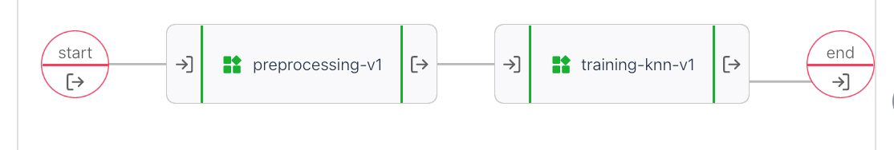
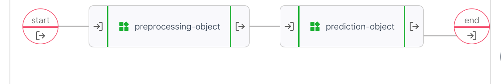

In this walkthrough I modified a tutorial from the UbiOps cookbook ‘Python Scikit learn and UbiOps’,
but I replaced everything python with R. So in stead of scikitlearn I’m using {tidymodels}, and where python uses a requirement.txt, I will use {renv}.
So in a way I’m going from python cookbook to {recipes} in R!
The original cookbook (and my rewrite too) has three components:
You can combine those parts into
The cool thing about UbiOps is that we don’t care what language something is in, we could do preprocessing in Python and predictions in R for example. And we could use version “0.1.6” of {parsnip} in one component and version “0.1.3” of that same package in another component. As long as you keep the interface the same (“output”:integer, “score”: double) or something. we can just pass information along.
This was a lot of fun, but if you use this as your example for R projects, there is a catch, in keeping the R version as similar to python as possible I had to take some steps you might not take that are related to python or sklearn:
We pull apart the trainingset by cutting of the target values (y) from the predictor variables (X), that is not something we do with tidymodels, so to keep the tutorial equivalent, I splitted the values, and in the next component, combined them again. Similarly inside sklearn there is a function split_train_test or something that takes in an X and y dataset and returns train_X, test_x, train_y and test_y.
with rsample you leave the dataset intact, create a split object (that only contains
the indices for test and train) and let the package handle the particulars.
Returning multiple objects is a cool feature in python and there are packages
in R that do it too, but in general I don’t miss it.
In these code examples I have removed all print statements and comments, for the full code go to gitlab or github. Both python and R examples have an init() function that runs when the container is first started and a request() function that runs when we send an actual request to the service. In these examples I only show the request part and not the init because the init is mostly empty for the python code and contain the library statements for the R code.
Let’s dive in. For every component I show the python code first and my R version after.
The pre-process component does feature engineering on the dataset, which I don’t think is necessary for a KNN model, but that doesn’t matter for the example.
The init function doesn’t do anything here but the file starts with imports that you need. imported are pandas, numpy and from sklearn import the StandardScaler
The request function:
class Deployment:
# init function
def request(self, data):
diabetes_data = pd.read_csv(data["data"])
diabetes_data[['Glucose','BloodPressure','SkinThickness','Insulin','BMI']] = diabetes_data[['Glucose','BloodPressure','SkinThickness','Insulin','BMI']].replace(0,np.NaN)
diabetes_data['Glucose'].fillna(diabetes_data['Glucose'].mean(), inplace = True)
diabetes_data['BloodPressure'].fillna(diabetes_data['BloodPressure'].mean(), inplace = True)
diabetes_data['SkinThickness'].fillna(diabetes_data['SkinThickness'].median(), inplace = True)
diabetes_data['Insulin'].fillna(diabetes_data['Insulin'].median(), inplace = True)
diabetes_data['BMI'].fillna(diabetes_data['BMI'].median(), inplace = True)
if data["training"] == True:
X = diabetes_data.drop(["Outcome"], axis = 1)
y = diabetes_data.Outcome
else:
X = diabetes_data
y = pd.DataFrame([1])
sc_X = StandardScaler()
X = pd.DataFrame(sc_X.fit_transform(X,),
columns=['Pregnancies', 'Glucose', 'BloodPressure', 'SkinThickness', 'Insulin',
'BMI', 'DiabetesPedigreeFunction', 'Age'])
X.to_csv('X.csv', index = False)
y.to_csv('y.csv', index = False, header = False)
return {
"cleaned_data": 'X.csv', "target_data": 'y.csv'
}I could have done the same thing as within python, setting the library() calls at the top of the file. But in this case I set them up in the init(). I load {readr} and {recipes} {readr} adds some dependencies, but I feel they largely overlap with {recipes} and so it’s a nice addition because it is faster and more consistent then standard read.csv().
request <- function(input_data, base_directory, context) {
diabetes_data <- read_csv(input_data[['data']])
diabetes_recipe <-
recipe(diabetes_data, Outcome~.) %>%
step_mutate(
Glucose = ifelse(Glucose ==0 , NA_real_, Glucose),
BloodPressure = ifelse(BloodPressure ==0 , NA_real_, BloodPressure),
SkinThickness = ifelse(SkinThickness ==0 , NA_real_, SkinThickness),
Insulin = ifelse(Insulin ==0 , NA_real_, Insulin),
BMI = ifelse(BMI ==0 , NA_real_, BMI)
) %>%
step_impute_mean(Glucose, BloodPressure) %>%
step_impute_median(SkinThickness, Insulin, BMI) %>%
step_normalize(all_predictors()) %>%
prep()
diabetes_preprocessed <-
diabetes_recipe %>%
bake(diabetes_data)
if(input_data[["training"]]){
Y <- diabetes_preprocessed %>% select(Outcome)
X <- diabetes_preprocessed %>% select(-Outcome)
}else{
X <- diabetes_data
Y <- tibble(1)
}
write_csv(X, file = 'x.csv')
write_csv(Y, file = "y.csv", col_names = FALSE)
list(
"cleaned_data"= 'x.csv',
"target_data"= 'y.csv'
)
}I chose to move the selection based on ‘training’==TRUE to the end and so
when you call training==FALSE in the python version, the Outcome column is also
standardized while in the R version it will never be standardized.
In the R version I first only create the recipe and run it in the next step,
you could chain the bake() step directly to the previous steps, so it behaves
like the fit_transform() method from sklearn.
This component has the following steps:
The python version initializes with pandas, numpy, and imports train_test_split, KNeighborsClassifier and classification_report.
class Deployment:
# init function
def request(self, data):
X = pd.read_csv(data["cleaned_data"])
y = pd.read_csv(data["target_data"], header = None)
X_train,X_test,y_train,y_test = train_test_split(X,y,test_size=0.4,random_state=42, stratify=y)
knn = KNeighborsClassifier(n_neighbors=7)
knn.fit(X_train,y_train)
score = knn.score(X_test,y_test)
y_pred = knn.predict(X_test)
print(classification_report(y_test,y_pred))
with open('knn.joblib', 'wb') as f:
dump(knn, 'knn.joblib')
return {
"trained_model": 'knn.joblib', "model_score": score
}library calls: {readr},{kknn},{magrittr},{rsample},{parsnip},{yardstick}
request <- function(input_data, base_directory, context){
X <- read_csv(input_data[["cleaned_data"]])
y <- read_csv(input_data[["target_data"]],col_names = "Outcome")
input_dataset <- X %>%
dplyr::bind_cols(y)
input_dataset$Outcome <- as.factor(input_dataset$Outcome)
set.seed(42)
split_object <- initial_split(input_dataset, prop = 0.6,strata = Outcome)
library("kknn") # bug? it works without this call on my machine, but not on ubiops.
modelspec <-
nearest_neighbor(mode = "classification",neighbors = 7) %>%
set_engine("kknn")
trained_model <- modelspec %>% fit(Outcome~., data=training(split_object))
test_results <-
testing(split_object) %>%
dplyr::bind_cols(
trained_model %>% predict(testing(split_object))
)
acc <- test_results %>% accuracy(truth=Outcome, estimate = .pred_class) %>% dplyr::pull(.estimate)
classification_report <- metric_set(precision, recall, f_meas)
class_results <-
test_results %>%
classification_report(truth=Outcome, estimate = .pred_class)
print(glue::glue_data(class_results,"{.metric}: {round(.estimate,4)}"))
modelname <- 'knnmodel.RDS'
write_rds(trained_model, modelname)
list(trained_model = modelname, model_score=acc)
}In R I don’t need to supply the seed to the split function because it picks up the generic set.seed. There is not a classification_report function in the packages I use, but looking at the sklearn documentation this classification_report contains the precision, recall and f1-measure. So I used the metric_set function from yardstick to create a similar thing.
The init function loads the model from disk.
class Deployment:
# init function
def request(self, data):
input_data = pd.read_csv(data['data'])
prediction = self.model.predict(input_data)
diabetes_instances = sum(prediction)
pd.DataFrame(prediction).to_csv('prediction.csv', header = ['diabetes_prediction'], index_label= 'index')
return {
"prediction": 'prediction.csv', "predicted_diabetes_instances": diabetes_instances
}The init function loads the model from disk.
request <- function(input_data, base_directory, context){
input_data = read_csv(input_data[['data']])
predictions <-
model %>%
predict(input_data)
diabetes_instances = sum(predictions$.pred_class == 1)
predictions %>%
mutate(index=row_number()) %>%
select(index, diabetes_prediction = .pred_class) %>%
write_csv(file="prediction.csv")
list(prediction="prediction.csv",predicted_diabetes_instances=diabetes_instances)
}The index doesn’t make sense to me, but i added it anyways.
Training pipeline inputs
Training pipeline outputs: * trained_model: blob(file) * model_score: double (accuracy score)

Production pipeline inputs: * data: blob(file) * training: boolean
production pipeline outputs: * prediction: blob(file) * predicted_diabetes_instances: integer
 ## lessons learned While building these three components in R, I’ve found that creating a separate rstudio project for every component makes your work really easy. The {renv} package works really well with Rstudio projects too. Finally I now created a new folder deployment and copied the relevant files to it before zipping it, so the zipfile works nicely with UbiOps.
Tidymodels and sklearn have many similarities and it is relatively easy to write components from one language to another (though the whole point of UbiOps is that you don’t need to!). sklearn is an enormous python package that contains everything you ever could need, while the R philosophy is creating wrappers around existing packages to make sure everything works together nicely.
Now all we need is a way to move the trained model from the training pipeline to the production pipeline.
I think a supersimple project starter for Rstudio could be very useful, something like https://rstudio.github.io/rstudio-extensions/rstudio_project_templates.html where you define a deployment.R file with init() and request() and a test_request.R file that contains basics for testing the deployment file and the basics for turning it into a deployment.zip.
Later, I think a small addin for rstudio that talks to the API would be awesome!
I haven’t used the API here, I developed locally and defined everything through the webinterface.